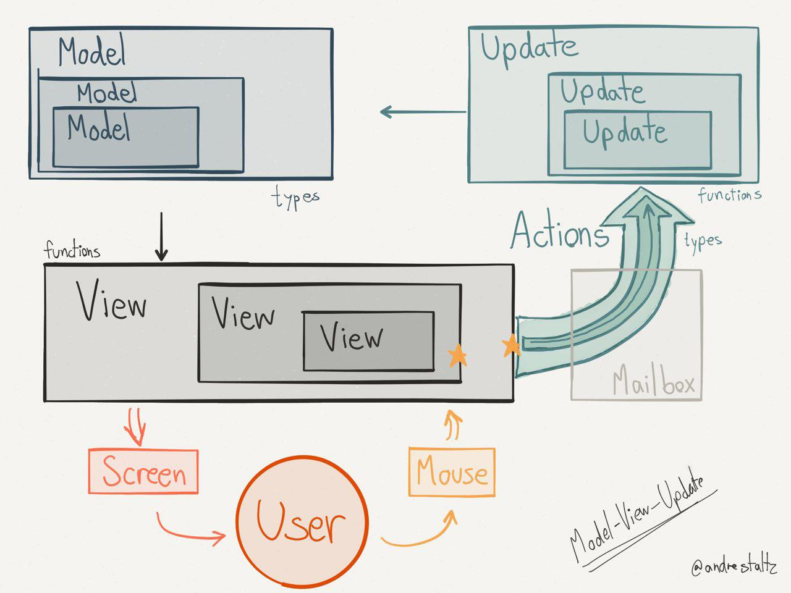

Le gouffre de Elm ?
Lundi, Octobre 9, 2017
Le 28 septembre 2017, s’est déroulé à Toulouse la deuxième édition du Google Developer Festival. Cet événement a eu beaucoup plus de succès que la première édition et nous a offert un grand nombre de conférences sur des sujets allant du développement à la gestion de la carrière d’un développeur. J’ai été particulièrement intéressé par la présentation de Paul Dijou sur le langage de programmation Elm qui permet de rendre accessible la programmation fonctionnelle pour les développeurs web.
Elm, c'est quoi?
Dans un premier temps Paul Dijou nous explique que l’Elm est un langage de programmation fonctionnel, fortement typé, immuable, pur et qui compile vers JavaScript. Voici un exemple de code Elm compilé en JavaScript.elm-- inside module "Example"
constant: String
constant = "42"
type Boolean = Truth | Lie
lie: Boolean
lie = Lie
jsvar _userame$project$Example$constant = '42'
var _userame$project$Example$lie = { ctor : 'Lie' }
Programmation fonctionelle
La programmation fonctionnelle est un style de programmation qui utilise comme concepts fondamentaux:
- les notions de valeur,
- de fonction,
- l’application de ces fonctions à des valeurs
Le terme de fonction est à prendre ici au sens mathématique du terme. Elm est un langage de programmation fortement typé dont les variables ne peuvent être null ou undefined. À l’image de TypeScript, le code écrit en Elm est compilé en Javascript, pouvant alors être interprété par n’importe quel navigateur web. Le premier point que soulève Paul Dijou est que ce langage offre une approche pure et immutable.
Effectivement, Elm est un langage qui se fonde sur les notions d’immutabilité. Ce concept vise à empêcher le changement d’état des variables dans l’exécution du programme, le contenu d’une variable ne peut pas être changé après son affectation. L’approche pure est un des fondements du paradigme de programmation fonctionnelle. Une fonction est pure lorsque le résultat ne dépend que de ses arguments et non d’un état externe. Par ailleurs, il n’a pas d’effet de bord, c’est-à-dire qu’elle retourne une valeur en sortie et ne change pas l’état d’une variable externe à la fonction.
Architecture Elm
Du fait de son architecture, Elm a été pensé pour développer en front-end. C’est pourquoi son concepteur propose une méthode pour structurer son code. Cette architecture s’approche du modèle MVC et propose :
- un modèle qui contient l’état de l’application,
- une vue qui représente l’application en fonction de son modèle,
- une fonction d’update qui va réaliser les changements sur le modèle en fonction des messages qu’il reçoit (retour de l’utilisateur, API, serveur, etc.).

No runtime error
Grâce à ces différents aspects, le concepteur de ce langage Evan Czaplicki a pu concevoir un compilateur qui fournit des messages d’une très grande qualité. En plus de nous décrire clairement le message d’erreur, le compilateur fera toujours de son mieux pour nous proposer une modification ou un lien pour nous aider à résoudre l’erreur. Mais le plus important, selon la documentation officielle, le compilateur Elm arrive à détecter les fragments susceptibles de fournir une erreur à l’exécution.
C’est donc le deuxième point qui est soulevé par le speaker. Ce langage est censé éviter toute erreur à l’exécution et fournir de plus grandes performances. Après l’avoir utilisé pendant plus d’un an en production, Paul Dijou nous fait un retour d’expérience sur cet aspect.
Selon la documentation officielle, le code compilé en JavaScript par Elm ne générera jamais d’erreur d’exécution. Cette assertion est confirmée par le speaker à 99% du temps. En effet, une fois que le code compile, il y a la garantie qu’il n’y aura pas d’erreur imprévue lors de l’exécution du programme contrairement à du code en JavaScript. Et cela parce que le langage nous oblige à prendre en compte tous les cas d’utilisation.
Néanmoins, ce langage de programmation n’est pas complet. Plusieurs fonctionnalités existantes en JavaScript ne sont pas encore implémentées sur Elm. C’est pourquoi il existe plusieurs manières de communiquer avec JavaScript afin de pallier ce manque. Ce procédé permet alors de compléter les fonctionnalités de notre application, mais nous ouvre la porte à de potentielles erreurs d’exécution.
Bons et mauvais points
Le speaker a fait le pari d’utiliser cette nouvelle technologie en cours de développement pour des applications en production. Pour terminer cette conférence, il nous fait un bilan des bons et mauvais aspects qu’il a rencontré durant cette année d’utilisation.
Le principal avantage d’utiliser Elm est que lorsque le code compile, nous n’aurons pas d’erreur d’exécution. Pour arriver à ce résultat, le compilateur nous oblige à prendre en compte toutes les possibilités. C’est pourquoi nous sommes obligés d’écrire de nombreuses lignes de code. Selon le speaker ce langage est très verbeux, mais de par sa facilité d’utilisation, la maintenance et le refactoring du code sont simples.
Le deuxième avantage majeur : la communauté qui entoure cette nouvelle technologie est très enthousiaste. En effet, elle participe activement à la création d’outils aidant le développement d’applications web Elm. Néanmoins, le créateur de ce langage a de très bonne idée mais il les développe seul. Pour certains le projet n’avance pas assez vite et c’est pourquoi quelques membres importants de cette communauté ayant créé des outils populaires ont arrêté de les maintenir.
Conclusion
Comme l’a démontrée cette conférence à un stade aussi jeune de son développement, le langage est déjà utilisable en production. Cela présage du meilleur quand on sait que des améliorations sont à venir. Le retour d’expérience de Paul Dijou paraît plutôt enthousiaste.
De plus, Facebook a récemment fait le choix d’utiliser cette technologie dans le développement de l’application « messenger », ce qui prouve sa fiabilité.
Pour conclure, il faudra attendre que ce projet soit plus mature pour pouvoir l’exploiter pleinement. La place que prend aujourd’hui TypeScript sur le développement d’applications web pourra aussi freiner la progression d’Elm. Affaire à suivre…
- un modèle qui contient l’état de l’application,
- une vue qui représente l’application en fonction de son modèle,
- une fonction d’update qui va réaliser les changements sur le modèle en fonction des messages qu’il reçoit (retour de l’utilisateur, API, serveur, etc.).